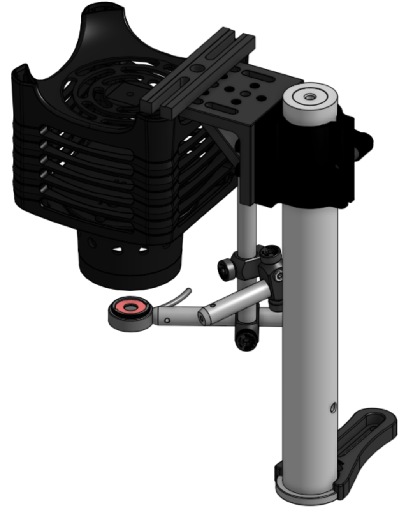
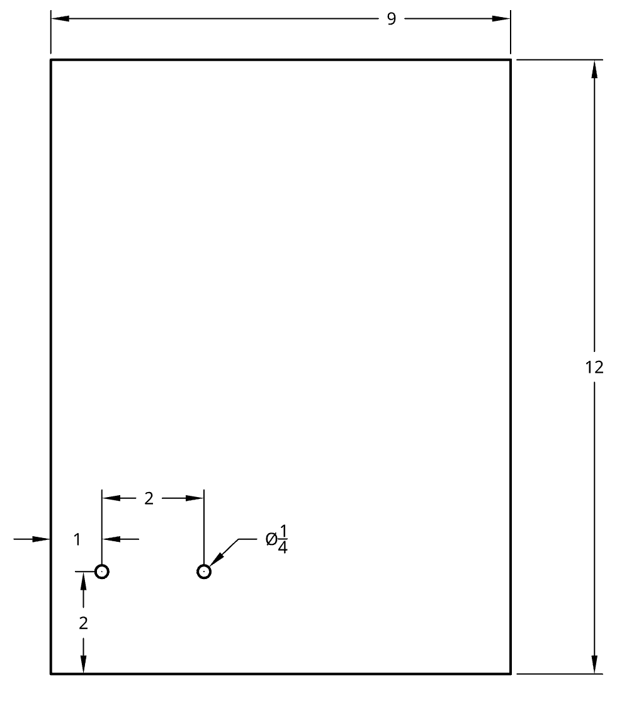
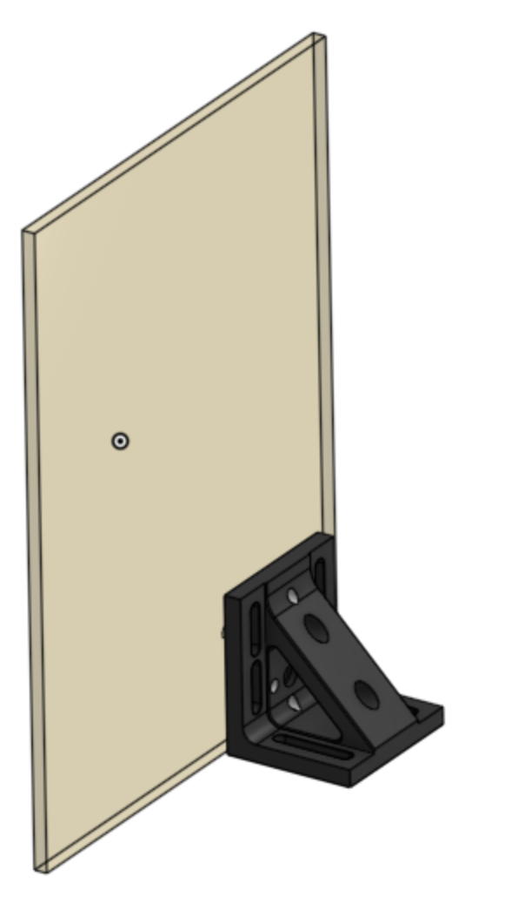

Last updated Jan 5, 2022 by Leanne Friedrich
Certain commercial equipment, instruments, or materials are identified in this user guide in order to describe a specific device. Such identification is not intended to imply recommendation or endorsement by the National Institute of Standards and Technology, nor is it intended to imply that the materials or equipment identified are necessarily the best available for the purpose.
SAFETY WARNING: The UV lamp can cause eye damage. Only turn on the UV lamp if the UV-blocking enclosure is fully closed, or if everybody in the room is wearing UV-protective goggles. The sensor can be removed from the printer to do spot checks on UV leaks.
The UV assembly consists of a UV curing lamp (High-Power LED for Microscopy 365 nm (UV) 3.0 W (Min)) on a post, pointed downward. The UV curing lamp is driven by a power controller (High-Power Driver for Solis LEDs 10 A Max 14.0 V Max). To turn on the UV lamp, press the button on the power controller. To change the intensity on the lamp, turn the button on the power controller. The power controller can be plugged into a regular outlet.
Below the UV lamp is a sensor which can be swung out of the way to make room for the stage. The sensor can detect light of a range of wavelengths and intensities. The sensor is attached to a PM120VA control box. The power button is on the left of the box. The user must choose a wavelength to detect. The wavelength of the UV lamp is 365 nm. The sensor box can be plugged into a regular outlet.
The UV assembly is placed at the far left side of the printer. A UV-blocking shield is placed between the UV assembly and the rest of the components, in order to prevent UV damage and premature curing.
The light blocker is mounted vertically using a right angle bracket which is fixed to the static platform of the Shopbot.
